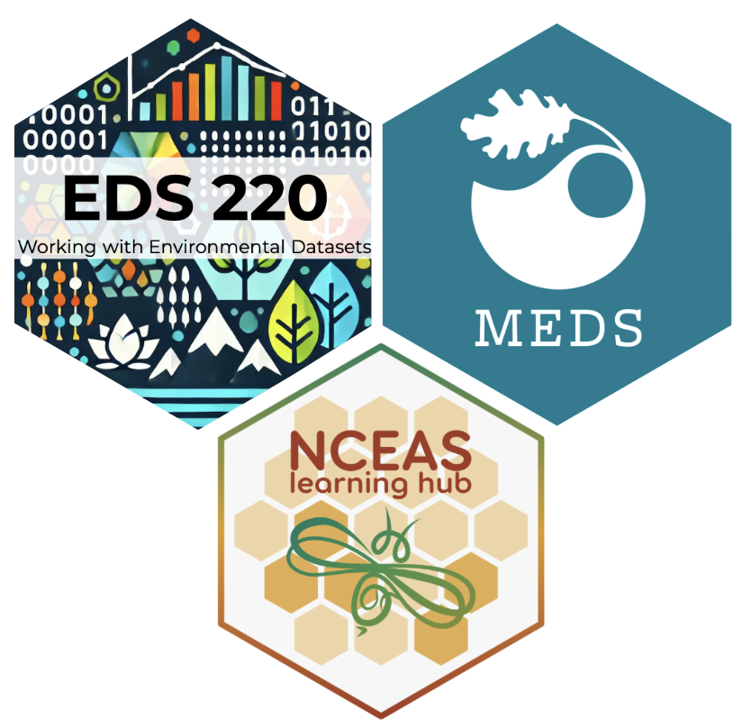
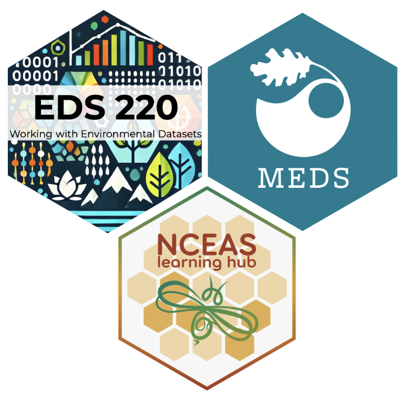
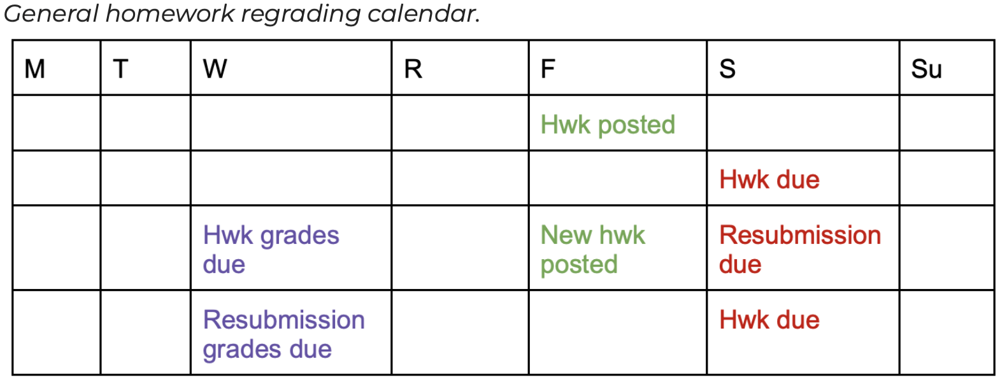
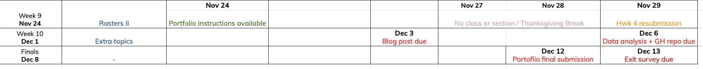

Banner by NASA’s Your Name in Landsat

EDS 220: Working with Environmental Data
Course logistics & syllabus
Week 1
Welcome to EDS 220!
This course focuses on hands-on exploration of widely-used environmental data formats and Python libraries. Together, we’ll work with real-world datasets, giving you the skills to analyze and understand the environment around us.
Banner by NASA’s Your Name in Landsat
The basics
Instructor
TA
Class Schedule: Monday and Wednesday, 9:30 - 10:45 AM, Bren Hall 1424
Discussion Sections: Thursday, 1:00 - 1:50 PM, Bren Hall 3022
About me
Before that:
Research:
Teaching:

Introductions
In the next few minutes, talk with a person next to you and ask them what parts of Santa Barbara have you enjoyed exploring.
You’ll get to introduce your partner at the end.
Learning Objectives
By the end of this course, you will be able to:
Tentative Schedule
Code of Conduct
We expect all course participants (including instructors, guests, and students) to be committed to actively creating, modeling, and maintaining an inclusive climate and supportive learning environment for all.
We expect everyone to treat every member of our learning community with respect.
Harassment of any kind will not be tolerated.
Everyone is expected to read and adhere to the Bren School Code of Conduct and the UCSB Code of Conduct.
Access & Accommodations
If you have any kind of disability, whether apparent or non-apparent, learning, emotional, physical, or cognitive, you may be eligible to use formal accessibility services on campus.
To arrange class-related accommodations, please contact the Disabled Students Program (DSP). DSP will initiate communication about accommodations with faculty.
By making a plan through DSP, appropriate accommodations can be implemented without disclosing your specific condition or diagnosis to course instructors.
Grading Breakdown:
Grade Cutoffs:
Homework Assignments
You can resubmit your assignments three days after they have received initial feedback.

Why regrades? Revisions, corrections, and improvements are crucial in the learning process! We greatly encourage you to resubmit your revised assignments.
Example: You submitted your homework on time on the due date and got a 6/10 in the assignment the coming Wednesday. You may build on the feedback received to correct your work and resubmit to improve your grade up to 8/10.
Except for extenuating circumstances, there will be no extension for any assignment. Late submissions will be accepted at the resubmission date and can obtain up to 50% of the assignment points.
Portfolio Project
The final assignment for the course will be creating data science materials for the students’ online professional portfolio.
Final Assignment:
The 20% grade for the portfolio is divided as follows:
Both a submission and a revised submission addressing all the feedback from the first revision will be needed for these two tasks.
Participation Requirements
To obtain full participation credit:
Why come up to present your solutions? Many reasons! To ractice public speaking, get comfortable with technical vocabulary, practice explaining a step-by-step solution, practice the material by teaching others, have a taste of live-coding, among others.
Policy on Generative AI (GenAI)
GenAI tools (such as ChatGPT) are strongly discouraged for the following reasons:
Please adhere to these guidelines:
Please read the full policy on the course syllabus
Student Resources